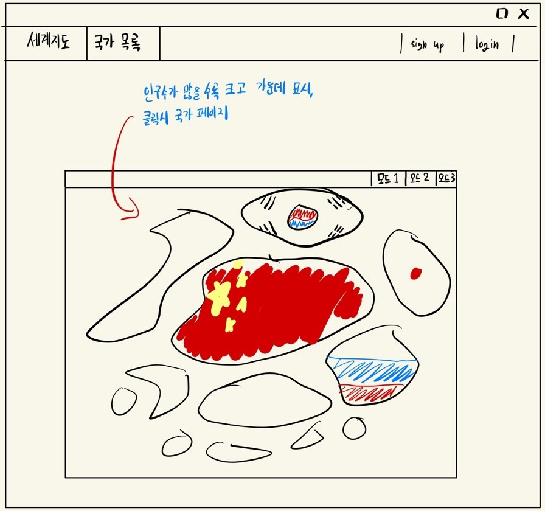
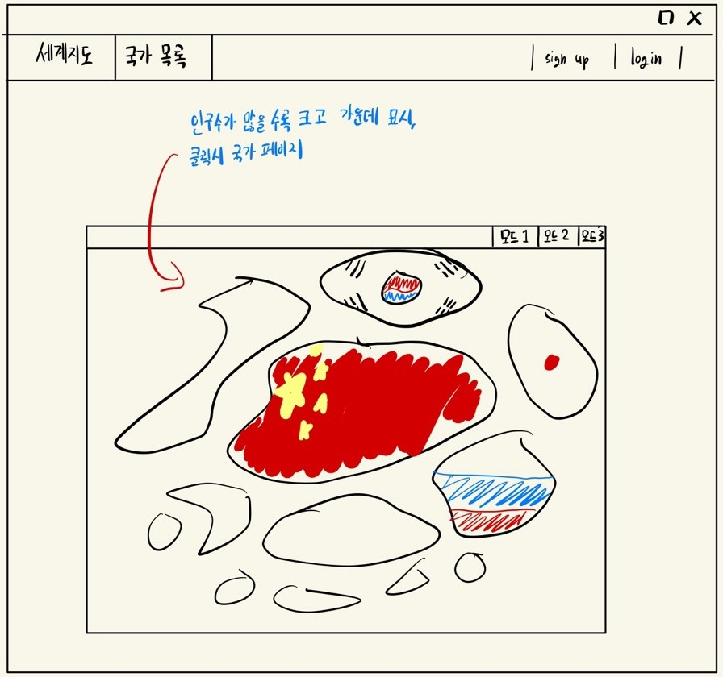

세계지도 화면 (3가지 모드)
1. 세계지도 위에 국가별 인구 수를 숫자로 표현하는 모드

2. 각 국가를 인구수가 클수록 더 큰 동그라미로 표현하는 모드
3. 인구 수를 단순히 막대그래프로 표현하는 모드

| 메인화면 |
|---|
|
세계지도 화면 (3가지 모드) 1. 세계지도 위에 국가별 인구 수를 숫자로 표현하는 모드
2. 각 국가를 인구수가 클수록 더 큰 동그라미로 표현하는 모드 3. 인구 수를 단순히 막대그래프로 표현하는 모드
|